, whose values for the observations in the data set, the
, whose values for the observations in the data set, the
 , are statistically independent random errors with means 0
and commmon variance
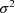
. However, with this model
, are statistically independent random errors with means 0
and commmon variance
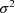
. However, with this modelIn this chapter the example discussed in chapter C is elaborated in order to begin illustrating the large variety of modeling possibilities using NONMEM.
The statistical model considered in chapter C has exactly one random effect. As such, it is a particular example of a class of regression models with possibly more than one random effect and where no random effect is nested within any of the others. An example of such a model, again a nonlinear regression model with just one random effect, but which does not have the simple error structure of the example of chapter C, is discussed in sections D.2 and D.3. Another example with two random effects is discussed in sections D.4 and D.5.
In recent years a variant of the statistical model discussed in chapter C has been found useful in kinetic situations. Let 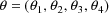 , and let
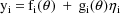
where
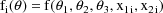
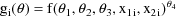
and f is as in chapter C. Again,
there is only one random effect,
, whose values for the observations in the data set, the
, are statistically independent random errors with means 0
and commmon variance
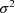
. However, with this model
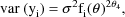
i.e. the variances of the
 are proportional to an (unknown) power of the mean values of
the
are proportional to an (unknown) power of the mean values of
the
 . If
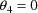
, the model reduces to the simple nonlinear regression
model. If
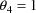
, the coefficient of variation of the
. If
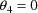
, the model reduces to the simple nonlinear regression
model. If
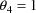
, the coefficient of variation of the
 is constant across i, viz.
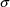
. In order to implement this model it is important to note
that in the expression for this model the random effect
occurs linearly and that its coefficient is a value of a
function g evaluated at
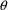
; see section D.3.
is constant across i, viz.
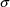
. In order to implement this model it is important to note
that in the expression for this model the random effect
occurs linearly and that its coefficient is a value of a
function g evaluated at
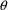
; see section D.3.
The ELS objective function with this model is:
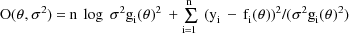
The efficacy of using this objective function with this model is discussed in Sheiner and Beal, 1985 and Beal and Sheiner, 1988. The objective function can also be written
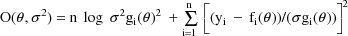
The quantity in square brackets
being squared is the weighted residual from
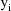
, the residual divided by its standard deviation. The
weighted residuals are defined as the weighted
residuals from all observations
 .
.
A code for PRED which implements the example is given in Fig. 36. The only difference between this code and the code in Fig. 1 is the value that is returned in G(1). In the earlier code, the value is uniformly equal to 1. In this code the value 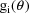 is returned. (This value is uniformly equal to 1 only when 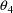 is fixed to 0.) In general, the Ith linear coefficient of the Ith random interindividual effect is returned in G(I). Here, though, there is only one random interindividual effect in the model.
A control stream for this
example is given in Fig. 37. The essential difference
between it and the one in Fig. 2 is that it specifies that
there are 4
 , rather than 3. The initial estimate of
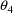
is unspecified, but is constrained to be between 0 and 3
(see section C.4.5). Also, this control stream specifies
that a plot of weighted residual vs time be obtained, rather
than specify that a plot of residual vs time be
obtained.
, rather than 3. The initial estimate of
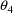
is unspecified, but is constrained to be between 0 and 3
(see section C.4.5). Also, this control stream specifies
that a plot of weighted residual vs time be obtained, rather
than specify that a plot of residual vs time be
obtained.
The minimum value of the
objective function is computed to be 8.778, not really
different from that obtained with the simple nonlinear
regression, 8.940. The final estimates of the parameters of
the regression function are also only a little different:
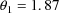
(vs 1.94),
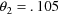
(vs .102),
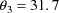
(vs 32). The estimate of
is .45, so that the variances of the
 are estimated to be approximately proportional to the
are estimated to be approximately proportional to the
 . However, the imprecision in this estimate is large (the
standard error estimate is about 400% of the point
estimate), and the presence of this parameter in the model
is only to provide robustness in the presence of possible
heteroscedasticity (Beal and Sheiner, 1988). The plot of
weighted residual vs time is also very similar to the
earlier plot of residual vs time.
. However, the imprecision in this estimate is large (the
standard error estimate is about 400% of the point
estimate), and the presence of this parameter in the model
is only to provide robustness in the presence of possible
heteroscedasticity (Beal and Sheiner, 1988). The plot of
weighted residual vs time is also very similar to the
earlier plot of residual vs time.
This example is very similar to the one given in chapter C. An oral dose of theophylline is administered to a single subject, but at various times both plasma and saliva concentrations are measured. At some times only plasma concentration or only saliva concentrations are measured. Therefore, there will be two types of observations in the data set. The regression function for the plasma concentrations is taken to be the "one-compartment model without absorption"
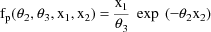
because although an oral dose was administered, the observations were taken after the absorption phase of the process was effectively over, and only an exponential elimination phase was in progress. The regression function for the saliva concentrations is taken to be
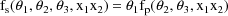
That is, the predicted saliva concentration is modeled to be proportional to the predicted plasma concentration. These two models can be combined into a single regression function as follows.
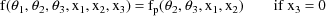
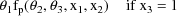
where 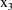 is the plasma-saliva indicator variable (it has the value 0 if the observation is a plasma concentration, and the value 1 if the observation is a saliva concentration).
In the statistical model the observations are doubly subscripted: 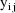 is the jth observation from the ith time point. When both plasma and saliva are measured, j assumes the values 1 and 2. When only plasma or only saliva is measured, j assumes the value 1. The statistical model is given by
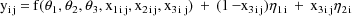
where
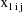
,
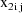
, and
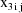
are values of the independent variables associated with
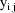
, and the
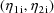
are statistically independent random error vectors with 0
means and common variance-covariance matrix
 . This
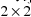
matrix is another model parameter to be estimated. It
contains two possibly different variance components, one
corresponding to plasma concentrations and one corresponding
to saliva concentrations, since each type of concentration
is measured with a possibly different scale. It also
contains a covariance component since we wish to account for
the possibility that when the two types of concentrations
are measured at the same time point, these measurements
(after adjustment for the fixed effects of time and dose)
may be statistically correlated. Under the model, when both
the observations
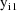
and
. This
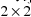
matrix is another model parameter to be estimated. It
contains two possibly different variance components, one
corresponding to plasma concentrations and one corresponding
to saliva concentrations, since each type of concentration
is measured with a possibly different scale. It also
contains a covariance component since we wish to account for
the possibility that when the two types of concentrations
are measured at the same time point, these measurements
(after adjustment for the fixed effects of time and dose)
may be statistically correlated. Under the model, when both
the observations
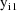
and
 are present at the ith time point, since one of them is
affected by
are present at the ith time point, since one of them is
affected by
 and the other is affected by
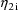
, and since these random effects can covary, so then can the
two observations. The two observations together,
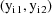
, therefore, form a multivariate observation. We let
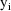
denote the column form of this vector. When only one
observation is present at the ith time point, then
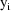
denotes this single number. There is no nesting of the two
random effects. Therefore, they both are treated as random
interindividual effects, and as with simple nonlinear
regression, the observation vectors
and the other is affected by
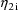
, and since these random effects can covary, so then can the
two observations. The two observations together,
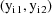
, therefore, form a multivariate observation. We let
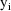
denote the column form of this vector. When only one
observation is present at the ith time point, then
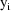
denotes this single number. There is no nesting of the two
random effects. Therefore, they both are treated as random
interindividual effects, and as with simple nonlinear
regression, the observation vectors
 are regarded as coming from different individuals (see
section A.5).
are regarded as coming from different individuals (see
section A.5).
The model can be rewritten
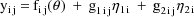
where
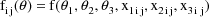
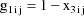
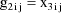
This linear expression in the 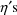 , where the coefficients are given as g’s, is similar to the way the model of section D.2 is expressed, and it is called the NONMEM linear model schematic. The term ’linear’ here refers to linearly occuring random effects and not to linearly ocurring parameters. By virtue of the observation vector being multivariate at some time points, this model is a type of multivariate nonlinear regression. The absence of a plasma or saliva measurement at some time point makes the situation unbalanced, or from another point of view, there are missing data.
Let I denote the number of time points. Also, for fixed i, let 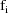 denote the column vector of values of the 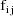 , let 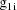 denote the column vector of values of the 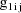 , and let 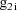 denote the column vector of values of the 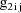 . The ELS objective function is given by
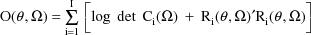
where
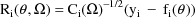
The matrix
is the variance-covariance matrix of
 . The vector
is the vector of weighted residuals from the observations
. The vector
is the vector of weighted residuals from the observations
 . As with the previous example, it has the form residual
(vector) divided by standard deviation (matrix), and it is
"squared" in the expression for the objective
function. The weighted residuals are defined to be
the weighted residuals from all obervations
.
. As with the previous example, it has the form residual
(vector) divided by standard deviation (matrix), and it is
"squared" in the expression for the objective
function. The weighted residuals are defined to be
the weighted residuals from all obervations
.
A code for PRED which implements the example is given in Fig. 38. Note that the values and are returned in G(1) and G(2), respectively. As with the previous example, these are the coefficients of and in the NONMEM linear model schematic. In general, the value returned in G(I) is the coefficient of the Ith random interindividual effect in the NONMEM linear model schematic.
A control stream for this example is given in Fig. 39. The data set is embedded in it, and like the data of the previous example, the first, second, and third data items in a data record are the dose, time, and DV data items, respectively. However, there is also a fourth type of data item, the plasma-saliva indicator data item. This is labeled P/S. The DV data item is either a plasma concentration or a saliva concentration, according as the P/S data item is 0 or 1, respectively. Since all observation vectors are regarded as arising from different individuals (see section D.4), and since some observation vectors contain two elements, a plasma and a saliva concentration, ID data items must be present in the data records. These will assure that both elements are identified with the same individual. Since the individual changes as time changes, the time data item has been chosen to serve as the ID data item. Therefore, a 2 appears in field 1 of the ITEM record. A separate fifth type of data item could have been used for the ID data item.
The control stream contains a
new model specification record, the STRUCTURE record for
 , which is discussed in section D.5.2. It also contains a
new initial estimate record, the BLOCK SET record for
, which is discussed in section D.5.2. It also contains a
new initial estimate record, the BLOCK SET record for
 which is discussed in section D.5.3. Also, sort codes appear
for the first time in the TABLE record, and separators
appear for the first time in the SCATTERPLOT records. These
are discussed in sections D.5.4 and D.5.5. Selected printout
which results from using the PRED and the control stream
given in Figs. 38 and 39, respectively, is discussed in
section D.5.6.
which is discussed in section D.5.3. Also, sort codes appear
for the first time in the TABLE record, and separators
appear for the first time in the SCATTERPLOT records. These
are discussed in sections D.5.4 and D.5.5. Selected printout
which results from using the PRED and the control stream
given in Figs. 38 and 39, respectively, is discussed in
section D.5.6.
There are two STRUCTURE records
in Fig. 39, the initial STRUCTURE record and the STRUCTURE
record for
 . Regarding the first of these, since there are now 2 random
interindividual effects, a 2 is placed in field 2. The
matrix
. Regarding the first of these, since there are now 2 random
interindividual effects, a 2 is placed in field 2. The
matrix
 could be constrained to be diagonal, in which case a 1 is
again placed in field 6. However, for the sake of this
example, no such constraint is wanted. Therefore, instead, a
1 is placed in field 7. This signals that
is to be regarded as a full matrix. Another option is to
regard
could be constrained to be diagonal, in which case a 1 is
again placed in field 6. However, for the sake of this
example, no such constraint is wanted. Therefore, instead, a
1 is placed in field 7. This signals that
is to be regarded as a full matrix. Another option is to
regard
 as a block diagonal matrix, in which case yet another value
is placed in field 7; see NONMEM Users Guide, Part II.
as a block diagonal matrix, in which case yet another value
is placed in field 7; see NONMEM Users Guide, Part II.
When a 1 is placed in field 7 of
the initial STRUCTURE record, i.e. when
 is not constrained to be diagonal, the most number of random
interindividual effects there can be is 5.
is not constrained to be diagonal, the most number of random
interindividual effects there can be is 5.
When a 1 is placed in field 7 of
the initial STRUCTURE record, the STRUCTURE record for
 must appear after the initial STRUCTURE record. Integer
format is used. When a 1, in particular, is placed in field
7 of the initial STRUCTURE record, a 1 is placed in field 1
of the STRUCTURE record for
must appear after the initial STRUCTURE record. Integer
format is used. When a 1, in particular, is placed in field
7 of the initial STRUCTURE record, a 1 is placed in field 1
of the STRUCTURE record for
 , and the number of random interindividual random effects is
placed in field 2. The information in this record is
redundant in this example; it is already given in the
initial STRUCTURE record. The requirement that the record
appears is related to the possiblility just mentioned that
, and the number of random interindividual random effects is
placed in field 2. The information in this record is
redundant in this example; it is already given in the
initial STRUCTURE record. The requirement that the record
appears is related to the possiblility just mentioned that
 can be block diagonal, and in this case the information
contained in the record is not redundant.
can be block diagonal, and in this case the information
contained in the record is not redundant.
A DIAGONAL record for
does not appear in Fig. 39. Instead, a BLOCK SET record for
 appears. The initial estimates of the elements of
appears. The initial estimates of the elements of
 are given in the BLOCK SET records for
are given in the BLOCK SET records for
 when
when
 is not constrained to be diagonal. More than one such record
is only necesssary when
is not constrained to be diagonal. More than one such record
is only necesssary when
 is constrained to be block diagonal, and it is this
situation that gives rise to the terminology ’BLOCK
SET’ (see NONMEM Users Guide, Part II). Fixed point
format is used. The initial estimates are placed in the
fields in the following order:
,
, ...,
,
,
, ...,
, ...,
, where K is the dimension of
is constrained to be block diagonal, and it is this
situation that gives rise to the terminology ’BLOCK
SET’ (see NONMEM Users Guide, Part II). Fixed point
format is used. The initial estimates are placed in the
fields in the following order:
,
, ...,
,
,
, ...,
, ...,
, where K is the dimension of
 . These estimates number K(K+1)/2 altogether. (Recall that
. These estimates number K(K+1)/2 altogether. (Recall that
 is symmetric.) If
is symmetric.) If
 is to be fixed to these initial estimates, then in addition,
a 1 is placed in position 8 of the record. In the BLOCK SET
record of Fig. 39, a 2 appears in position 8, and the fields
are left blank, indicating that NONMEM is to obtain the
initial estimates. When one field is left blank, all fields
must be left blank.
is to be fixed to these initial estimates, then in addition,
a 1 is placed in position 8 of the record. In the BLOCK SET
record of Fig. 39, a 2 appears in position 8, and the fields
are left blank, indicating that NONMEM is to obtain the
initial estimates. When one field is left blank, all fields
must be left blank.
As mentioned in section C.3.5.3, rows of tables may be sorted on the data items in specified columns. There is some reason for utilizing this feature in the example, namely, to separate the rows with plasma concentration DV data items from those with saliva concentration DV data items. This separation may be done by selecting the P/S data items for tabulation and by indicating that the rows of the table are to be sorted firstly on these data items. Then the first rows will contain only P/S data items equal to 0, and the last rows will contain only P/S data items equal to 1. The sorting is indicated by a 1 placed in the sort field following the field containing the index of the P/S data items. Accordingly, in the individual TABLE record in Fig. 39, field 4 contains the index of the P/S data items, and a 1 is placed in the following field. There are 2 types of data items selected for tabulation (note the 2 in field 1), the P/S data items and the time data items. Since it is also useful to sort the rows with plasma concentration DV data items on their time data items, and to sort the rows with saliva concentration DV data items on their time data items, an indication that the rows are to be sorted secondly on the time data items is also given. This second level sorting (a sort within a sort) is indicated by a 2 placed in the sort field adjacent to the field following the field containing the index of the time data items. Refering to the same individual TABLE record once again, it may be seen that field 2 contains the index of the time data items, and a 2 is placed in the following field. The resulting table is given in Fig. 40.
In general, the rows of any individual table may be sorted first on the data items appearing in a specified column by placing a 1 in the sort field following the field containing the index of these data items. The rows of the table may be sorted second on the data items appearing in another specified column by placing a 2 in the sort field following the field containing the index of these data items. A third level sort may be defined similarly, and so on, up to an 8-level sort. There can be no sort on the NONMEM generated data items. These data items are not ones the user selects for tabulation, and only data items of selected types may be sorted. Although the DV data items always appear in a table, the user may explicitly select these for tabulation and thereby also sort on them. If this is done, the DV data items will appear in two columns. They will appear in the fourth column from the right as usual, and they will also appear in some other column.
The column order of the data item types selected to appear in the table corresponds to their sort codes. The data item type with sort code 1 corresponds to column 1, the data item type with sort code 2 corresponds to column 2, etc. For example, in the table of Fig. 40, the P/S data items appear in column 1, and the time data items appear in column 2. Any data item types with sort code blank or 0 correspond to columns occuring after those columns with sorted data items, and the column order of these data item types corresponds to the order in which their indices are placed in the TABLE record.
As explained in section C.3.5.3, when there are more than 900 data records, each individual TABLE record generates a number of tables, so that all data records are used. All sorting is done within each of these tables separately. This implies that if, for example, (i) sorting is specified only on ID data items, (ii) these data items are all positive integers, and (iii) the data records with ID data item equal to 1 are data records 900 and 901, then the first of these two records is used to obtain the first row in the first table, and the second record is used to obtain the first row in the second table.
A family of scatterplots may be defined by separating a given scatterplot, called the base plot, into a number of separate ones. To do this, a third data item type, called the separator, is specified, in addition to the two types of data items defining the given scatterplot. Suppose the values for the separator that appear in the data set are: , , ..., sorted from lowest to highest value. Then one scatterplot of the family consists of those points of the base plot resulting from all data records with the value of the separator; another consists of those points of the base plot resulting from all data records with value of the separator; etc. The family members appear in the printout in the same order as the sorted values of the separator. The family is called a one-way partitioned scatterplot.
This feature is useful in the example where it is desirable, for example, to separately plot the plasma concentrations vs their predictions, and the saliva concentrations versus their predictions. By choosing the P/S data item type for the separator, the base plot of the DV data items vs the prediction data items can be separated into the two desired plots. The P/S data item type has two values, 0 and 1. The points of the base plot resulting from all data records with P/S data item equal to 0 form one of the desired plots, while the remaining points of the base plot, resulting from all data records with P/S data item equal to 1, form the other plot.
To use this feature two additional fields of the individual SCATTERPLOT record defining the family are used. As usual, the indices of the data items defining the base plot are placed in fields 1 and 2. A 1 is placed in field 3; this indicates that one separator is used. Also, the index of the separator is placed in field 4. See, for example, the last SCATTERPLOT record of Fig. 39.
Altogether, eight families of scatterplots are defined in the problem specification of Fig. 39. Four single-member families, CONC vs TIME, PRED vs TIME, RES vs TIME, and PRED vs CONC, using the labels that appear on the scatterplots, are defined. Four two-member families are also defined, using the same base plots and using the P/S data item type as a separator. The entire set of thirteen scatterplots is given in Figs. 41-52.
Some general remarks concerning scatterplots involving residual and weighted residual data items are in order. These scatterplots are often used to detect model weaknesses. Residuals, in particular, can be scatterplotted against the values of an independent variable (a fixed effect). Ideally, the plot should have the appearance of a homogeneous scatter about the zero line. If it does not, this can suggest that the effect of the variable is not appropriately modeled, and the pattern of the scatter may suggest a more appropriate model. If there is another independent variable which can affect the data, then it can be helpful to develop a picture wherein the effects of the two variables are not confounded. Using the second variable as a separator can help in this regard. This presumes that the second variable is also a fixed effect, and that its values exist as data items in the data set. A random effect is a type of independent variable, and it also can be somewhat confounded with the effect of the first variable. The values of the random effect, however, are not known. When, though, there are several observations from some individuals, then the ID data item can be used as a separator to help distinguish random interindividual effects from the effect of the first variable.
Also, the desire for homogeneous residuals is predicated on the assumption that under the assumed model, and ignoring estimation error, the residuals are uncorrelated and have means 0 and constant variance (i.e. homogeneous variance). In each of the two examples used in this chapter, however, under the model, the variances of the observations (and therefore, of the residuals) vary with values of fixed effect independent variables. Weighted residuals, on the other hand, are uncorrelated and have means 0 and constant variance under the assumed model (and ignoring estimation error). So it is generally advisable that with models under which residuals are nonhomogeneous, weighted residuals, rather than residuals, should be plotted.
In the first example, weighted residual vs time was plotted, but in fact, the plot does not appear too different from a plot of residual vs time (not shown; but see the plot of residual vs time in Fig. 18). In the second example (the one under discussion) there really is not a need to plot weighted residuals because when the P/S data item type is used as a separator, the modeled variances of the observations are constant with time.
A base plot can be separated into a family based on the values of two separators. Such a family is called a two-way partitioned scatterplot. Consider all distinct pairs of values, one value from the first separator and the other value from the second separator. Then one scatterplot of the family consists of those points of the base plot resulting from the data records with one particular pair of values of the separators, and another scatterplot of the family consists of those points of the base plot resulting from the data records with another pair of values of the separators, etc. To obtain a two-way partitioned scatterplot, place a 2 in field 3 of the individual SCATTERPLOT record, and place the indices of the two separators in fields 4 and 5.
The summary of the problem specification shown in Fig. 39 is given in Fig. 53. Some remarks concerning it may be helpful.
The total number of individuals is stated to be 17. Due to the presence of ID data items, individual records are defined, and the number of such records may be verified to be 17.
The matrix
 is stated to have a certain block form. Its lower triangular
part is shown schematically to indicate that it is a simple
matrix. The matrix could be constrained to have a block
diagonal form, in which case this form would be indicated
with a more "interesting" schematic pattern than
that shown in this problem summary (see NONMEM Users Guide,
Part II).
is stated to have a certain block form. Its lower triangular
part is shown schematically to indicate that it is a simple
matrix. The matrix could be constrained to have a block
diagonal form, in which case this form would be indicated
with a more "interesting" schematic pattern than
that shown in this problem summary (see NONMEM Users Guide,
Part II).
The final parameter estimate,
standard errors, and correlation matrix are shown in Figs.
54-56. The reader might note that the correlation between
and
 is estimated to be -0.066, which is quite small.
is estimated to be -0.066, which is quite small.